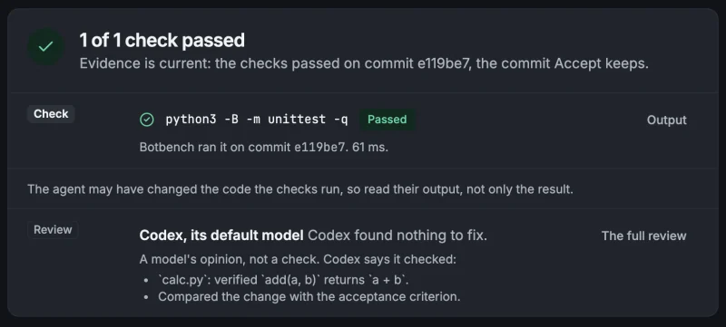
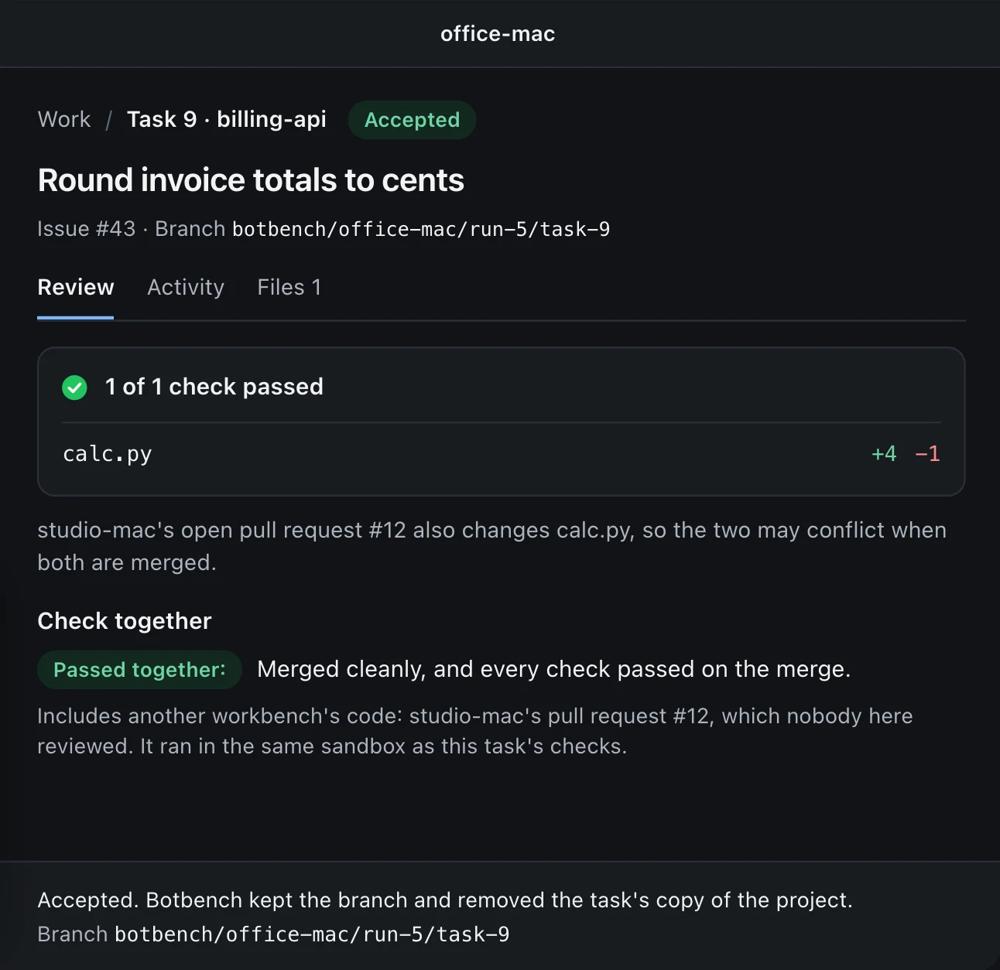

Proof, not promises.
Every task ends in things you can inspect: a branch, its diff, the output of your own checks, and the transcript of what the agent did and what you answered. This page says what each of them can tell you, and what has not been tested.


A check runs your commands. A review is a model’s opinion.
Checks are your repository’s own commands, run on the agent’s work in a sandbox. Botbench keeps their output. A passing check proves only what the check covers, and the agent may have changed the code the checks run, so read the output, not only the result.
A review is by another vendor’s agent: Codex, Grok or Antigravity. It is asked to say what it checked, and the task shows when it did not. Botbench always shows it as a model’s opinion, never as a check.
When a result is accepted without you.
Only in a fully autonomous run, and only when all four hold. Otherwise the run waits for you and says why.
At least one check ran, and every check passed.
The reviewer, if there is one, said it looks right and named what it checked.
Nothing was refused that is on the always-ask list or would have reached outside the task’s copy.
Every changed file was expected from the plan, and none is under a protected path.
Learn that two changes do not fit before either is merged.
On a task that is ready for review, you ask for it. Botbench merges your task with another workbench’s open pull request in a temporary copy, runs the repository’s own setup and checks on the merge, and shows the result, labelled as including another workbench’s code: Passed together:, Failed together: or Conflict:.
It pushes nothing and removes the copy. The result counts only while both branches are still at the commits it ran on.
Its behaviour is tested in test/engine/check-together.test.ts, and the overlap warning’s wording in test/peers-words.test.ts. Neither has been recorded from two real installations yet, so the picture is an illustration.

One acceptance test: two workbenches, one issue.
Two Botbench processes, each its own workbench, share one remote. On the first, one issue becomes a fully autonomous run: its first check fails, the builder fixes it, the reviewer raises a concern, the builder fixes that too, and the task is accepted and opened as a pull request with no person deciding. The second workbench starts on the same issue, sees the first one’s claim, and withdraws.
It drives the real Claude Code in a real browser; the answers of gh and of the reviewer are replayed from output captured once from the real ones. It does not run in GitHub’s CI. Run it on your Mac, from the repository’s folder:
npx playwright test --config e2e/playwright.config.ts e2e/northstar.e2e.ts
Is anyone using it?
Its author, on its own repository. Botbench is built with Botbench where it can be, under the same rules and tests as any other change. Pull request #113 is one Botbench pushed and opened: its description is the task’s evidence, from what was asked to the review.
Not tested yet.
- Two Macs
- Pairing and questions and answers were tested with two installations on one Mac, over the loopback address, not across two Macs.
- A real iPhone
- Adding Botbench to the Home Screen and its notifications are in the code, not confirmed on a real iPhone.
- Your phone, remotely
- Using Botbench from a phone over a private network was not part of the tested quickstart.
- Two real installations
- No recording yet shows the overlap warning or checking together between two real installations.
- First-run time
- About ten minutes is the author’s figure, not a measurement.
Make your first branch in about ten minutes.
Build Botbench from source, hand Claude Code one task in a practice repository, and read the branch it leaves. Early software: no installer, no hosted service, and nothing promised to stay the same.
What it needs
- Mac
- macOS. Agents start only on macOS, because the confinement relies on its sandbox.
- Node
- Node 24 or later, and git set up so you can commit.
- Claude Code
- Required, signed in with your own subscription. It plans every run and builds by default.
- Codex
- Optional, to build or to review.